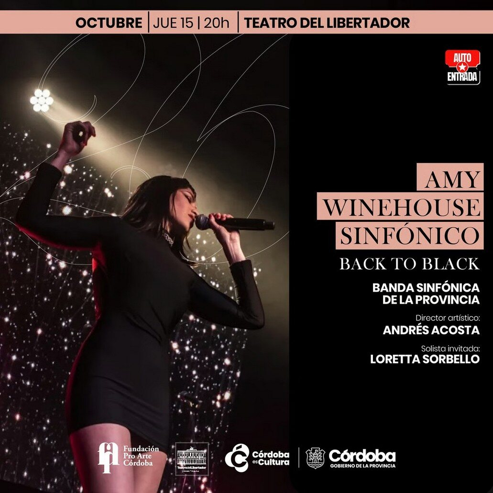
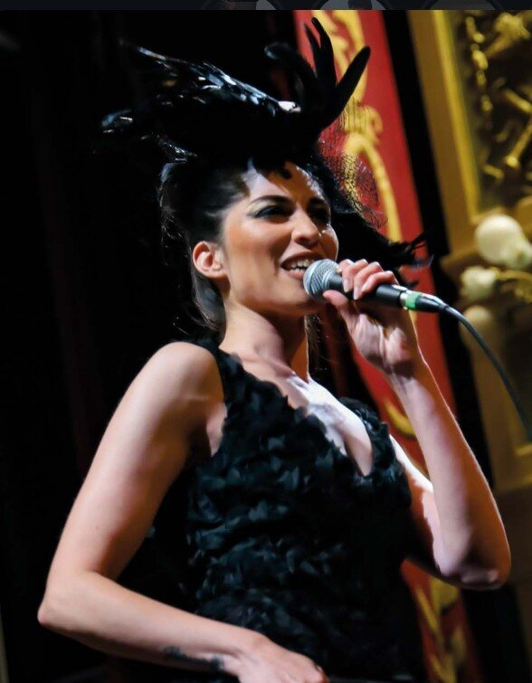

El homenaje sinfónico a Amy Winehouse llena el Teatro del Libertador
La Banda Sinfónica de la Provincia y Loretta Sorbello reinterpretaron el disco Back to Black en el Teatro del Libertador San Martín.

Con las entradas agotadas, la Banda Sinfónica de la Provincia presentó el jueves 15 de octubre, a sala llena, Amy Winehouse sinfónico en el Teatro del Libertador San Martín de Córdoba. La cantante Loretta Sorbello interpretó canciones de la diva del soul acompañada por la banda, en un tributo a Back to Black, el disco de la artista británica que este mes cumple 20 años.
«La verdad, muy, muy, muy felices de que esto tenga tanta acogida», celebró el director artístico Andrés Acosta en un video difundido por el teatro antes del concierto. Allí, el músico adelantó que ya se preguntaban cuándo podrían repetirlo.
La solista invitada, Loretta Sorbello, contó que la coincidencia con el aniversario del álbum no fue programada. «Se ve que Amy está con nosotros», agregó la cantante.

La propuesta giró en torno a un disco que la sala definió como «una de las obras más representativas de la música popular contemporánea». Los arreglos musicales para banda de concierto fueron obra de Néstor Alderete, Carlos Nazaro y Nicolás Mazza. De acuerdo con el portal Autoentrada, la función tuvo una duración prevista de 70 minutos y fue apta para todo público. Más información en la agenda cultural de la Provincia.
Back to Black se editó en octubre de 2006 y fue el segundo y último disco de estudio de Winehouse, después de Frank (2003). La cantante británica murió en 2011, a los 27 años.
El álbum reunió canciones como «Rehab», «You Know I’m No Good», «Back to Black», «Tears Dry on Their Own» y «Love Is a Losing Game», que mezclan el soul, el jazz y el sonido de los grupos femeninos de los años sesenta. En 2008, el disco le valió a Winehouse cinco premios Grammy, entre ellos Grabación del Año y Canción del Año por «Rehab» y Mejor Artista Nuevo, según informó Cooperativa en su cobertura de la ceremonia.
Esos temas no faltaron en la interpretación de Loretta Sorbello junto a la Banda Sinfónica de la Provincia.
¿Fuiste al tributo a Amy Winehouse?
¡Gracias por votar! Compartí la nota con quien fue con vos.